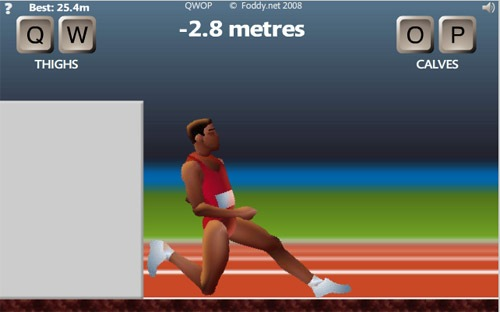

Hamburger Phone
03 January 2009
03 January 2009
01 January 2009
Well, what is there to say? It’s the new year and it’ll probably be the same as the last year.
I don’t really have any new year resolutions cause I don’t believe in them. No one ever sticks to them and I bet you probably couldn’t even remember the resolutions you set last year.
Now we’re all gonna get messed up when we have to write the date cause we’re used to writing 2008. Now we have to get used to this new crap, 2009.
The new ball looks pretty cool though. Lots of pretty lights.
I think I’ll change my wordpress theme.
Hey, we’re one year closer to the end of the world.
Australia got their new year 16 hours ago. I think. And its like summer there. Weird.
LEAP SECOND! Cause the earth isn’t spinning fast enough.
Hey, exactly one year ago the earth was standing the same place it is now. I think.
Man, Carson Daly is a douche.
Happy New Year?
year++;
30 December 2008
We finally got to go snowboarding even though the trip was nearly cancelled. It was a four day trip to Belleayre, a small but fun mountain. The conditions ranged from wet slushy snow to man-made snow over ice and super fog to bright sunshine. The ice sucked but it was pretty good overall. I finally learned to ride switch which is awesome. And this is how it went down.
19 December 2008
It’s snowing! Although it isn’t the first time this season its still pretty awesome. Weather.com says its gonna be about 4-6 inches of snow around campus.
I hope there’s like 100 times more snow up on the mountains. I want to ride some snow up there not some stupid ice we’re known for on the ICE COAST. I’m extra excited to go this season. I don’t really know why. I guess cause college has been a crap load of work and snowboarding is such a great way to just chill.
Freaking Chem final, why are you on the 22nd?
09 December 2008
I haven't played my guitar in quite a while. I don't know what happened, I just kind of lost interest in it. Sometimes I pick it up and play some stuff but otherwise it just sits in the corner of my room collecting dust.
04 December 2008
I think Tokyoflash has the coolest watches ever. They're kinda high-tech and futuristic-looking and imported from JAPAN! We all know Japan makes the coolest shit.
 The watch on the right is called the S-Mode Oberon. It's the one I got
after I broke my G-shock watch. The outer ring is hours, inner most ring
is tens digit of the minutes, and the one in the middle is the ones
digit. When I first got it, it took forever to figure out what time it
was but then I got used to it. Its cool because other people can't tell
what time it is. It's probably the coolest watch I ever had minus this
Power Rangers watch I had when I was little.
The watch on the right is called the S-Mode Oberon. It's the one I got
after I broke my G-shock watch. The outer ring is hours, inner most ring
is tens digit of the minutes, and the one in the middle is the ones
digit. When I first got it, it took forever to figure out what time it
was but then I got used to it. Its cool because other people can't tell
what time it is. It's probably the coolest watch I ever had minus this
Power Rangers watch I had when I was little.
Check it out in action (skip to 2:30):
But I broke the strap it some freak freebording accident and I still haven't gotten it fixed. I'll probably get it fixed over the winter break(SNOWBOARD 08!!!!!!) or maybe I'll just give it to my brother as a present. I want to get another one but they're so freaking expensive.
I hate not having a watch and not knowing what time it is.
01 December 2008
I hate reading. I don't find it interesting at all. And I don't get how people can just sit down and read a entire book. I think it's the most boring crap ever. I would rather sit around and do nothing than read a book. That's how much it sucks.
I do this weird thing when I read. I'll be reading and then I'll start thinking about something random word I read in the book. Then I'll stop daydreaming and I'll be a page ahead from where I started daydreaming. It's like I can daydream and read at the same time but I won't remember anything that I read.
If they were subtitles to a movie I was watching, then I have no problem reading that. But whenever I see pages and pages of huge blocks of text and no pictures, I freaking hate it. I think its kind of like waiting in a huge ass line for absolutely... NOTHING!
So yeah, sorry for making you read.
12 November 2008
The demo for Left 4 Dead came out a couple days and I immediately downloaded it on steam. I've been looking forward to playing this game since forever. I'm a hugeeee fan of coop shooting games. Now a zombie coop shooter? Freaking sweet!
11 November 2008
Qwop is this dude that comes from a country whose training program was under-funded and now has to run in the Olympics. What you do in the game is try to run 100 meters using the Q, W, O and P keys without falling over. Q and W control the thighs and O and P control the calves.

Click the image to play
I found this on Indie Games. It's probably one of the stupidest games I've ever played but I have no idea why its so addicting. When you first play the game, it seems impossible to run but then you get the hang of it and it's kind of satisfying. Its hilarious when Qwop falls cause he looks so freaking dumb. My best is 53.2m by actually running. Not that stupid crawling crap.
09 November 2008
A couple days ago, I went to the Union to get some food with people. I went in and grabbed CJ's Chicken Tenders and a cream soda and sat down to eat. I start eating the chicken tenders one by one not really paying attention to what they looked like. Finally, I got to the last one and noticed something strange about it.
It looks like a PENIS!
I thought It would be funny to put Jason on it. Just look at his face! What a douche.
I still haven't eaten the penis-shaped chicken tender 'cause it seems kind of awkward. It stuck it in the fridge and now its just sitting there. Maybe someday someone will open it and eat it, not paying attention to the shape of it, and we'll all laugh at him. Penis-eater.
{kind=link}
{kind=link}
{kind=link}
{kind=link}
{kind=link}
{kind=link}
{kind=link}
{kind=link}
{kind=link}
{kind=link}
{kind=link}
{kind=link}
{kind=link}
{kind=link}
{kind=link}
{kind=link}